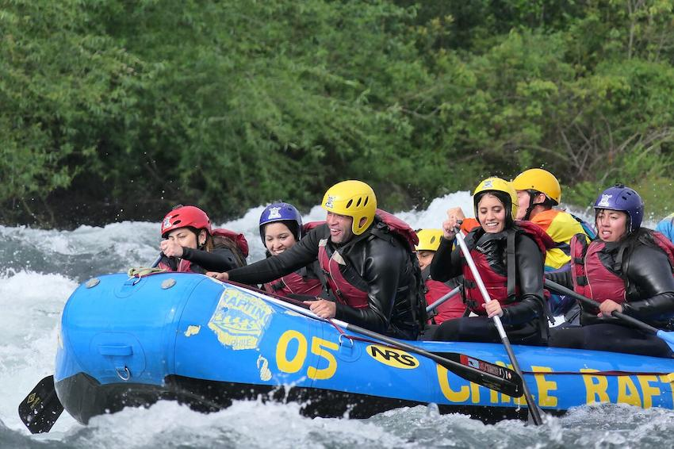
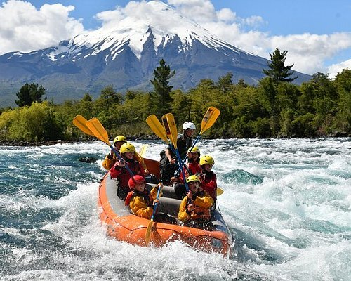
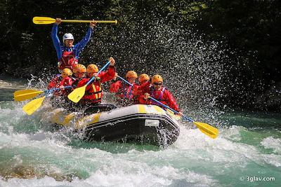
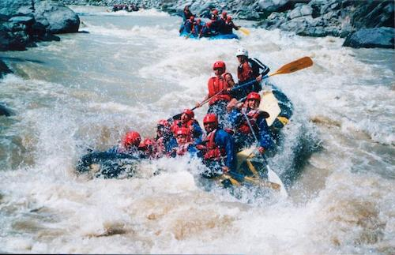
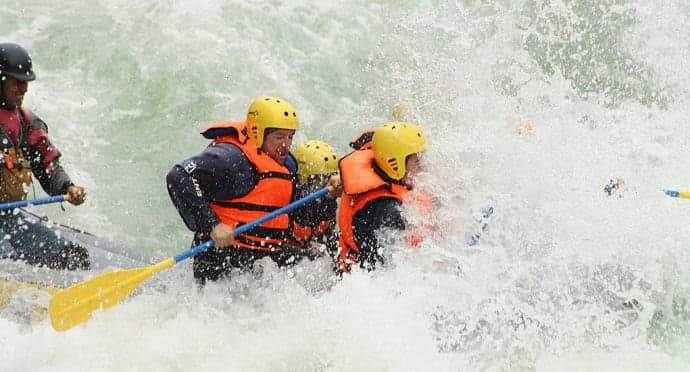
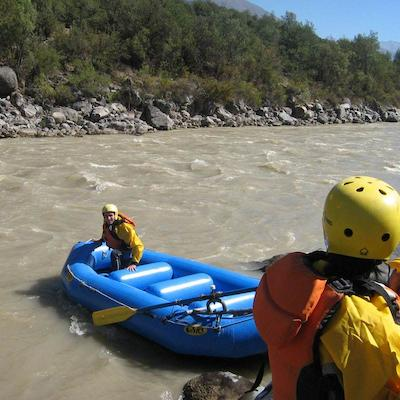

At White Water Rafting Adventures, our mission is to provide exhilarating and safe white water rafting experiences that connect people with nature and foster a spirit of adventure. We believe in creating unforgettable memories, promoting environmental stewardship and delivering unparalleled customer satisfaction. Join us for a journey where every ripple tells a story and every rapid brings a thrill!

White Water Rafting Adventures
History
Founded in the early 1990s by a group of passionate river guides, White Water Rafting Adventures started as a small, local operation with a single raft and a big dream. Over the decades, we've grown into a premier rafting company, renowned for our expert guides, top-of-the-line equipment, and unwavering commitment to safety. We've navigated countless rivers, shared countless laughs, and introduced thousands to the incredible world of white water rafting. Our roots are deep in the river, and our future is as vast as the open rapids.
Adventure Awaits You!




